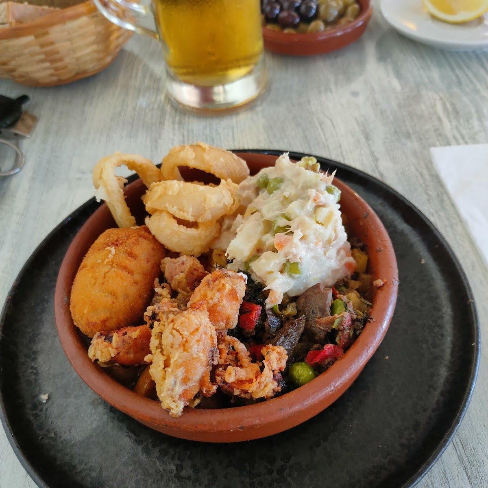

En Sa Raval cada plato empieza en el mercado de Algaida. Elegimos
los mejores ingredientes de temporada, los de los productores que
conocemos por su nombre, y los cocinamos como se han cocinado
siempre en esta isla: con tiempo, con técnica y sin artificios.
La sopa mallorquina, el arroz brut, los caracoles o los chipirones
no son platos de menú — son la memoria gastronómica de
Mallorca. Los cocinamos con respeto a la receta y a quien los va
a comer. Por eso los lugareños llevan años volviendo cada semana.
Raciones generosas, precios honestos y el trato de siempre.
Eso es Sa Raval.
"Una joya culinaria del centro de Mallorca. Cocina de toda la
vida, ingredientes frescos y un trato que ya no se ve en
muchos sitios."
— Visitante Google ·

Mercat local
Ingredientes frescos de temporada, directos de productores del interior de Mallorca.
Tradición sin atajos
Recetas mallorquinas de siempre, cocinadas con el tiempo que necesitan.
Trato excepcional
Mencionado en más del 90 % de las reseñas. No es suerte, es vocación.
Terraza con vistas
Come con el campo y la Serra de Tramuntana de fondo. Cada visita es diferente.
El trébol de tres hojas
Símbolo de esperanza, fortuna y conexión con la tierra. Representa nuestros tres pilares: ingredientes locales, receta tradicional y trato excepcional.
Lo que cocinamos
Nuestra carta
Cocina de temporada · La carta varía según el mercado del día
Desayunos & Café
Para empezar el día
Granizado de almendra
Bebida fría tradicional mallorquina, elaborada con almendra del Pla
Café de tueste artesanal
Solo, cortado o con leche — en taza de cerámica local
Pa amb oli
Pan de payés tostado, aceite virgen extra, tomate de temporada
Ensaimada
Pastel mallorquín hojaldrado, ligero y esponjoso, recién horneado
Variados
Para compartir
Variado mallorquín
Selección de croquetes, ensaladilla rusa y callos de la casa
Croquetes de la casa
Croquetas cremosas de jamón ibérico, rebozadas y fritas al momento
Ensaladilla rusa
Receta tradicional con patata, guisantes, zanahoria y mayonesa casera
Callos a la mallorquina
Con sobrasada, butifarra negra y las especias de siempre
Platos del día
De la cocina de mercado
Sopa mallorquina
Sopas de pan con verduras de temporada y aceite de oliva virgen extra
Arroz brut
Arroz caldoso de caza, sobrasada, especias y setas silvestres
Caracoles en salsa
Caracoles de monte en tomate con hierbas aromáticas y picada
Chipirones
A la plancha o en su tinta, con arroz blanco de acompañamiento
Escalope de ternera
Empanado, con patatas fritas o ensalada verde de temporada
Postres
Para cerrar bien
Tarta de manzana
Tarta casera de manzana caramelizada con canela y masa quebrada
Greixonera
Pudín mallorquín de ensaimada, huevo y azúcar — textura sedosa
Helado artesanal
De almendra o higo según temporada, elaboración propia
954 reseñas en Google
Lo que dicen quienes comen aquí
4,5 sobre 5 · Media de 954 opiniones
"
El trato del personal es de diez. La comida mallorquina de toda
la vida, con ingredientes frescos y raciones que de verdad
sacian. El arroz brut estaba espectacular. Un sitio que no
puedes perderte si visitas el interior de Mallorca.
M
Maria GarcíaHace 2 semanas
"
Llevamos años parando aquí en nuestras rutas en bici por
Mallorca. Terraza preciosa con vistas al campo y la montaña.
La sopa mallorquina y los caracoles son de los mejores que hemos
probado. Precios muy honestos para la calidad que ofrecen.
J
Joan PerellóHace 1 mes
"
Un restaurante de pueblo auténtico y absolutamente delicioso.
El granizado de almendra es el mejor que he tomado en mi vida.
La tarta de manzana casera, para repetir. Una joya que los de
fuera deberíamos conocer más.
Moments a Sa Raval
Descubre el día a día de nuestra cocina